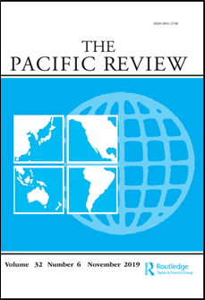

收录于合集

作品简介
【作者】 Yahya Gülseven，土耳其国际合作与协调机构专家、安卡拉阿提林大学国际关系系兼职讲师。他在各国发展合作项目的设计和实施方面有15年经验，研究兴趣是国际援助架构、新兴援助者和南南合作。
【编译】 吕紫烟（国政学人编译员，山东大学东北亚学院）
【校对】 徐一凡（国政学人编译员）
【审核】 戴赟
【排版】 卢奕财
【美编】 聂涵琳
【来源】 Gülseven, Y. (2020). ‘Aid with Chinese characteristics’: Competitive and/or complementary?. The Pacific Review, 1-25.
期刊简介

The Pacific Review《太平洋评论》是太平洋地区研究的主要平台，作为跨学科期刊，其宗旨和目标为打破研究领域之间以及学术界、新闻界、政府和商界之间的壁垒，重点关注政策问题。2019年该刊的影响因子为1.633，在区域研究类SSCI期刊中排名11/77，在国际关系类SSCI期刊中排名第35/95。
【中国援助】中国特色援助：竞争？互补？
‘Aid with Chinese characteristics’: competitive and/ or complementary?
Yahya Gülseven
文章导读
近年来，随着中国对外援助计划的增多，许关于其是否将成为发展合作模式新选择的辩论也如火如荼地展开。对于“中国特色援助” (Aid with Chinese characteristics)，西方国家常常持怀疑态度，认为这是对传统援助架构的挑战。而较为乐观的观点则认为作为新兴的援助大国，中国为受援国提供了发展合作模式的替代性选择，争夺新自由主义的发展模式霸权。分析人士大多关注“中国特色援助”作为一个选项的好与坏，但很少有人质疑其新颖性以及其成为替代性发展合作模式的实际潜力。本研究从新葛兰西派观点出发，探讨了中国作为援助大国与传统援助国的不同之处，以及这种援助模式在多大程度可被视为反霸权的替代性选择。 本研究的核心论点是中国特色援助服务于新自由主义历史集团(neo-liberal historical bloc)的整体目标和利益；但同时在全球金融危机的大背景下，也加剧了中国与西方国家之间的紧张关系与竞争状态。
**
**
引言
近年来，发展合作中新兴援助国家(emerging donors)的数量和重要性不断上升，构成国际发展援助领域最显著的变化之一。其中，中国的表现最引人注目。中国成为援助大国，有人欢喜有人忧。
中国的发展合作政策以援助、贸易和投资相结合的战略为基础。西方国家指责中国利用援助来获取原材料和发展中国家的市场，还让贫穷国家背负了难以承受的债务。
另一个常见立场则是对中国重新成为援助大国感到欣喜。他们把中国的发展合作模式理想化，将其视为一种更进步的选择，可以取代西方主导的国际发展和援助架构。许多左翼人士认为，中国提供了一条发展路径的新选择，有利于其他发展中国家减少对美国主导的国际资本主义体系的依赖，实现独立发展。
当传统的西方援助国指出中国援助掺杂机会主义时，中国政府经常煞费苦心地指出其发展合作方式的独特性和优点。自21世纪初，中国开始采用“南南合作”(South- South Cooperation)的表述方式，以区别于传统的南北合作模式。
中国的发展合作真的能推动受援国走向独立自主发展吗？中国是否有意挑战并取代传统援助架构？ 针对这些问题，本文进行了如下研究。第二部分介绍了理论框架。第三部分是中国自战后初期以来对外援助的历史回顾。第四部分探讨了与传统援助国相比，“中国特色援助”有何独特之处。第五部分着重分析了中国援助如何在全球层面上巩固新自由主义霸权，同时也加速了新自由主义历史集团内部的冲突与对抗。结语部分简要评估了“中国特色援助”成为发展合作模式新选择的潜力。
01
理论框架
发展援助架构可以被定义为向发展中国家提供援助的规则和机制，包括政治和行政机构、提供援助的渠道和方式、财政手段以及援助国和受援国之间的发展合作形式。 当前的全球援助架构一般指二战后管理西方国家开发合作的规则和制度。
本研究得益于新葛兰西派的研究方法，它为系统分析战后发展援助提供了有益概念和分析框架。本研究认为，从战后初期开始，发展援助不仅是援助国对受援国的剥削手段，而且维护了美国领导的资本主义国际秩序霸权。 在这方面，新葛兰西派的研究方法拓宽了我们的关注点，使我们从单一分析（援助国-受援国）发展到多维度分析，即发展援助实践与世界霸权的关系。
葛兰西派的霸权观不仅将霸权视为国家对其他国家的统治，而且由于其在资本积累主导模式中处于中心地位，霸权国能够通过提供一些社会经济和政治收益，吸引其他国家和社会参与其中。
历史集团是指具有竞争和异质性利益的各种社会阶级力量之间在目标和信念上的一种统一形式，这是建立和争夺霸权的关键。战后，一个由美国领导的、由一体化的西欧所构成的反共产主义历史集团出现。在该历史集团的成型过程中，发展援助发挥了重要的作用。从新葛兰西派的观点出发，本研究认为马歇尔计划及随后而来的一系列援助计划试图建立一个在美国领导之下、跨大西洋的历史集团。
战后援助的一大特点是其持久性。伴随内嵌自由主义(embedded liberalism)向新自由主义(neoliberalism)的转变，战后传统援助架构也逐渐与以市场为基础的新自由主义发展模式相一致，即官方发展援助附带条件和相关政策建议，主要以强制开放市场，私有化国有资产，并采取较少的保护性贸易政策作为援助条件。
本研究关注在资本主义生产关系扩张深化的霸权计划中，援助在确保受援国认可霸权并给予霸权合法性方面所起的作用，并探究中国特色援助是否对当前援助架构构成了系统性挑战。
02
中国援助发展史
尽管中国被称为“新兴援助国”，但其对外援助历史可追溯到20世纪50年代早期，甚至早于许多传统的西方援助国。20世纪50年代到60年代初，作为苏联的受援国，中国的对外援助政策深受其影响。在接受苏联援助的同时，中国在20世纪50年代初也建立了自己的对外援助项目，并开始向朝鲜、越南以及其他共产主义国家提供援助，以支持反帝国主义斗争、巩固共产主义阵营的团结。
中苏关系破裂后，苏联切断了对华援助。此后，中国援助兼具反苏联和反西方色彩。援助成为中国与第三世界新独立国家和革命运动相联系，以反对西方帝国主义和苏联修正主义的主要方式之一。但苏联对中国对外援助的影响并没有就此结束。总体来说，中国发展合作的话语表述和实践与当年苏联的发展合作模式十分相像。
上世纪70年代初，中国对外援助数量大幅增加。这些援助行为带来的效果对1971年中华人民共和国恢复联合国席位，起着重要作用。
但庞大的对外援助项目也给中国的国家预算带来了沉重的负担，中国领导人不得不重新考虑其对外援助政策。20世纪70年代后，中国对第三世界国家的援助请求变得更具选择性。另一个重要原因则是中美关系的改善。随着中美外交关系和解，中国逐渐远离了第三世界国家的革命和民族解放运动。
自20世纪70年代后期以来，中国的对外援助政策以惠及“改革开放”议程为导向，更加强调通过投资和贸易开展互利合作。西方援助国和日本成为中国援助政策的效仿对象。80年代，中国开始将援助与投资相结合。90年代，中国的援助资金来源和手段进一步多样化，在对外援助资源的使用上更加强调竞争、效益和市场导向。该转变受日本援助模式的影响很大。从90年代中期开始，以商业为导向的对外援助逐渐成为中国对外援助的主流，而以赠款为基础的政府间合作则逐渐淡出人们的视野。90年代，“经济安全”(economic security)的概念在中国的外交政策中脱颖而出，即打造旨在获得重要自然资源的对外援助新模式。
新世纪伊始，中国对外援助迅速增多。同时，国际和区域论坛的建立也将援助关系进一步制度化。
03
中国与国际援助架构
中国的对外援助并不是独一无二的。作为受援国，中国学习并有选择性地采纳了其他援助国的援助方式和做法。中国的援助实践具有实用主义特点，即对传统援助实践以新的方式解读并实施。 在遵守当前援助架构规则和机制的同时，中国也一直在努力通过参与创建新的国际发展融资机构，增强其作为援助国的影响力。
传统援助国的援助实践也受到了中国援助实践的影响。 近年来，为了回应来自中国的竞争，西方援助国再次聚焦实体基础设施项目，减少对受援国的高压、削减援助附加条件。除此之外，美国的一些试点援助项目更是采用了中国的援助模式。
“南南合作”是中国式发展援助的主题，中国政府强调“促进独立发展”和“无条件援助”是区分中国式援助与传统援助国援助实践的重要特征。
然而，中国鼓励独立发展模式还是有一定难度的。由于中国深度融入全球经济，其在推动受援国经济增长和自给自足发展方面的空间极其有限。中国不断增长的原材料需求，加深了这些国家对初级产品出口的依赖。中国出口导向型的发展模式严重依赖发达经济体的持续性需求。一旦发达国家对中国出口产品的需求下降，中国的援助资金就会相应缩减。换句话说，全球资本主义体系是中国援助的经济来源。
中国强调不干涉受援国内政，导致人们普遍认为中国提供的援助和商业贷款不附带任何政策条件。但中国要求，只有在受援国承认“一个中国”政策的前提下，才能开展切实的发展合作。任何接受中国援助的国家必须同意使用中国劳动力和设备，并遵守合同规定。此外，与西方援助国一样，在某些情况下，中国也把优惠贷款作为向受援国索取某种东西的手段。
然而，中国并没有在其援助资金中附带新自由主义的政策规定。而且，与西方援助国相比，中国援助附加的政治和经济条件已经不那么明显和明确。 中国也受益于受援国开放的市场环境，这正是由西方援助国所实施的新自由主义政策和改革所一手打造的。
04
服务于新自由主义历史集团的
“中国特色援助”
自1978年市场改革后，中国创造的经济奇迹为发展中国家树立了模范。但这种模式也带来了许多不良后果。“中国模式”实际上加剧了资本主义剥削。因此，从劳工角度看，中国发展模式不值得被称赞为一种替代模式。
中国的大部分对外援助活动皆服务于西方援助国所确立和追求的目标。中国在受援国实施的援助项目，为西方跨国公司提供了必要的基础设施和良好的投资环境。 从这个意义上讲，与其说中国在推动南南合作、团结和自给自足，不如认为中国是通过大规模的基础设施援助项目，帮助这些国家全面融入全球资本主义经济。
中国也开始重点关注受援国的人力资源开发援助项目，这为资本培养了一批体格健壮、技能过关的无产阶级。
因此，一方面中国受益于新自由主义世界秩序，另一方面西方企业也受益于中国在人力资源开发和实体基础设施方面的援助项目。
中国和西方的对外援助实践在对欠发达国家的共同剥削中相互补充，同时也加剧了新自由主义历史集团内部的冲突与对抗。中国1978年市场改革是同时期全球资本主义更大范围重组进程的一部分。制造业向东亚转移，中国成为新的资本主义积累中心。中国的高速工业化和经济增长，大大增加了其对能源资源和市场的需求。因此，在非洲和拉美等地区，中国开始与西方国家和企业展开竞争。
所以，一方面，中国的援助实践通过将世界各地区纳入全球资本主义体系，加强和巩固了新自由主义霸权。另一方面，在与传统西方援助国的竞争中，中国也将援助作为一种战略性手段，来获取欠发达国家的自然资源和市场。
05
结语
实用主义是中国特色援助的一大特征。对于受援国来说，中国援助为他们提供了另一个援助来源，有时也可作为逃避西方援助附加政策条件的途径。但中国援助本身并不足以被称为一种替代性发展模式。 中西方援助的互补性和竞争性并存。中国正在与传统援助国进行一场双线斗争，一边是合作、另一边是竞争。
中国和其他新兴援助国能否以及如何改变当前援助架构，现在断言显然为时过早。在当前世界经济深受美国新政府孤立主义倾向(isolationist orientations)影响的情况下，中国似乎将自己描绘成自由贸易和全球化的新倡导者。这些政策的效果仍然有待观察。但可以肯定的是，中国作为一个援助国，并没有提供足以取代资本主义发展模式的新型发展机遇。
译者评述
本文认为中国特色援助与西方传统援助之间兼具互补性与竞争性。总体来说，中国特色援助不足以对传统援助框架构成挑战，因为其无法为受援国提供独立于世界经济体系之外的发展模式。
我们承认，从某种程度上来说，中国是全球化的受益者。“中国奇迹”震惊了西方国家、也震惊了世界。但“中国特色模式”在世界上其他地方行不行的通，这一点现在谁都说不准。我国在对外援助过程中，并不带有任何对外输出制度的意图。本文也承认我国对外援助的附加条件比起西方国家来说，已经不那么明确和明显。在不同的时代背景和特殊国情之下，我国尊重并支持每个国家的发展道路选择。
中国在制定自己的援助政策时，也学习和有选择地汲取了国际传统援助架构(OECD- DAC)的许多宝贵经验。正如中国特色经济发展之路一样，中国援助也没有照搬西方模式，而是取其精华、完善自身，打造出极富中国特色的“中国特色援助”。
发展是目的，道路是手段，而探索道路是过程。 近年来，我国的官方声明中已鲜有“中国模式”，取而代之的是“中国经验”，这是由我国在发展过程中，借鉴他国经验以及我国自主探索积累的成功经历和失败教训等融合而成。与“中国模式”相比，“中国经验”更具实用主义色彩。 “授人以鱼不如授人以渔”，相比“填鸭式”灌输更加省时省力，且在对外宣传过程中，也较少容易引起敌意和担忧，令人更易接受。
当然，本文也从客观上启示了我国在实施援助的过程中，不仅要把好传递援助物资、保证配到资金到位等硬实力这一“关”，还要做好舆论宣传工作、打造负责任大国形象的软实力这一“关”。
近年来，伴随国际形势和中国国家实力及国际地位的变化，我国发起的对外发展合作援助项目总体呈增多态势。以亚洲基础设施投资银行、丝路基金和金砖国家新开发银行等为代表的中国特色援助项目不断改革创新，并逐渐走向制度化，更加关注援助和发展的有效性。[1]未来这些新的制度性援助机制是否会取代传统援助架构？即使中国没有挑战传统援助框架的意图，亦或西方国家有意夸大这一威胁。[2]然而无论与否，结果往往并不是仅由中国或西方国家的本意所能决定的。
中国特色援助实践数量日趋增多、形式愈加丰富，但中国是否已经具备了一套完整而体系化的对外援助理论？关于这一点，中国学者内部也尚未形成共识。[3] 或许欠缺系统的理论解释也是我国援助实践总是被西方国家误解的一个重要原因之一。
也有不少学者发问：中国当前的援助实践规模是否与其国家实力和国际地位相匹配。有中国学者剖析了中国实施援助的四个核心动机，即政治动机、经济动机、发展动机以及人道主义动机；且在不同时间段，援助行为的主导动机也有所不同。而只有恰当的援助规模才能保障援助的有效性和可持续性。中国未来是否应该持续扩大援助规模？还是选择在此基础上，转变援助方式、调整优化援助结构？
另外，中国特色援助与西方传统援助架构存在互补性的一大原因就是，中国填补了被传统援助国所忽视的欠发达国家的基础设施建设。那么，在基本完成该方向的投资建设之后，中国特色援助未来的发展方向又会如何？
在此，译者认为本文在以下方面仍然有继续深入研究的潜力。
首先，作者把影响中国对外援助理念和政策的因素归结为中国早期的受援实践，而忽略了其他重要因素的影响，如中国伦理观念和传统文化、领导人理念等。 [4]这也导致本文在中国对外援助实践的总体特点及各时期的变化方面，解释力略显欠缺。
其次，本文主要关注的是通常情况下的中国特色援助，而没有考察在自然灾害、传染病等突发事件与危机中，中国特色援助与西方国家的传统援助相比又有何显著特点。 在这些突发危机中，不附加条件的中国援助能否为发展中国家提供一套更好应对突发事件的备选方案？
最后，本文将主要关注点放在了援助国的主观意愿与单边行动上，而较少考察援助实效，即援助给受援国带来的实际效果如何。 中西方在衡量援助效果方面也存在差异，西方传统援助大国以“援助效率”为衡量指标，而中国则以“发展效率”作为援助有效性的衡量指标，更加关注援助给受援国经济和社会发展带来的实在收益与效果。[5]
未来，我国应该将国内发展问题与国际援助问题更好地结合，不仅要以国内经济发展支撑国际援助，更要努力实现国际援助反哺国内经济社会发 展， [6]“一带一路”就是一个很好的案例。国际援助应该继续发挥将我国经济资源等硬实力转化为国际话语权和影响力等软实力的作用。
参考文献：
[1] 刘长敏.理念变革:从“发展援助”到“发展合作”[J].青海社会科学,2016(06):69-76.
[2] 廖兰,刘靖.西方视野中的中国对外援助研究[J].中国农业大学学报(社会科学版),2012,29(04):93-101.
[3] Meibo Huang & Jianmei Hu (2020) Foreign aid study: Chinese schools and Chinese points, The Pacific Review, 33:3-4, 520-549, DOI: 10.1080/09512748.2020.1728571
[4] 潘亚玲.中国特色对外援助理论建构初探[J].当代亚太,2013(05):92-110+159.
[5] 白云真.中国对外援助的战略分析[J].文化纵横,2013(04):15.
[6] 董天美.中国对非洲援助的政策转向与效应评价[J].社会科学文摘,2018(09):14-16.

文章观点不代表本平台观点，本平台评译分享的文章均出于专业学习之用, 不以任何盈利为目的，内容主要呈现对原文的介绍，原文内容请通过各高校购买的数据库自行下载


好好学习，天天“在看”

国政学人
支持学术公益与知识传播
微信扫一扫赞赏作者 __赞赏
已喜欢，对作者说句悄悄话
取消 __
发送给作者
发送
最多40字，当前共字
上一页 1/3 下一页
长按二维码向我转账
支持学术公益与知识传播
受苹果公司新规定影响，微信 iOS 版的赞赏功能被关闭，可通过二维码转账支持公众号。